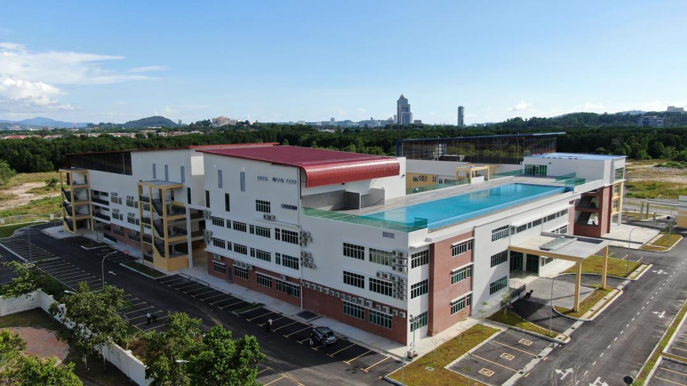
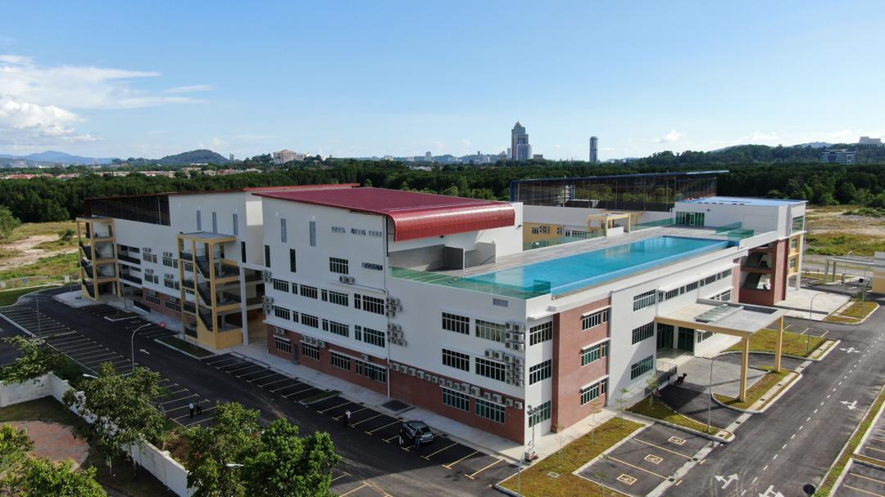

About Us
The College officially began operating in January 2001 in a humble 6-storey office building situated in the heart of Johor Bahru City. Today, it has grown to become one of Southern Malaysia's leading colleges, producing significant student accomplishments in the field of accounting, management, law and pre-university (A level) education. In May 2013, the College moved to its newly built campus at Taman Desa Cemerlang, which could accommodate up to 1,200 students; equipped with facilities like cafeteria, lecture halls, hostel, etc.
Our Vision
To be the premier college of excellence for the study of various disciplines such as law, accounting, business management, computer science, airline services, and English language.
Our Mission
To provide quality education that focuses on knowledge, skills, attitude and employability at an affordable fee to all.
Our Definition of 'Quality', and What It Means to You
"Quality" means having competent and passionate lecturers who could provide quality notes, lecture in ways that students can easily understand, and challenge them to think creatively and solve problems. In addition, the programmes offered by the University of London are world-class programmes, which not only enhances graduates' employability but are also a source of pride for our graduates.
Our Students' Achievements, Your Assurance
TARC students have won World Prizes in Cambridge A level exams, graduated with First-Class Honours from the University of London (UOL), won World Highest marks awards in UOL exams, and won ACCA awards. Work hard and you may be our future achiever.
Our Philosophy: Ordinary People, Extraordinary Dreams
We strongly believe that education should be affordable - not an overburden to hardworking parents. And this philosophy is reflected through our motto: "Ordinary People, Extraordinary Dreams". By making fees affordable, we make higher education now accessible to the ordinary people. Students who previously didn't even dare to think of becoming a lawyer, an accountant, or university graduate, can now realise their extraordinary dreams through Crescendo. Our sincerest thanks also goes to PTPTN for providing students with study loans. If you share the same belief as us, please visit us: We are honoured to be given an opportunity to equip you with a world-class qualification.
 
